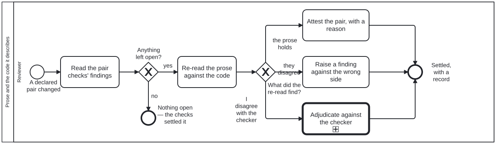

Generated from
cat-harness/processes/sdlc/narrative-code-review.bpmnbygen-processes-viz.ts— do not edit here. All processes
Process_NarrativeCodeReview · advisory · 5 step(s)
Judging whether the prose side of a declared prose/code pair still says what the code does, once the machine has done what it can. You are in this process when a change touches both sides of a declared pair — a diagram and the workflow it implements, a skill and the code beside it — and review-task has sent it here.
The mechanical half is already on the subject’s kg-qa sidecar: prose-reviewed-since-code-changed says whether the code moved while the prose stood still, and prose-claims-resolve says which claims the prose makes about the code hold, are false, or could not be determined. This process judges only what is left — the stale pairs, the false claims and the undetermined ones — and never re-derives what the checks already settled.
Three outcomes, each leaving a record: the prose holds (attested, with a reason), the two really disagree (a finding against the side that is wrong), or the reviewer disagrees with a checker’s verdict (adjudication, which keeps the checker’s entry beneath the judgement). A proof and its Lean are the one pair kind a proof assistant can settle; that specialisation is proof-narrative-lean-equivalence, not this diagram.

| lane | role | what it does here |
|---|---|---|
| Reviewer | reviewer |
The generic reviewer, taking this lane for the call path only: it reads what the pair checks left open and settles each item one of three ways. It can attest and raise findings but cannot overrule a checker on its own say-so — that is what the call into adjudication is for. |
Every one of the 5 step(s) is documented.
| step | lane | skill / sub-process | what it does |
|---|---|---|---|
Read the pair checks’ findingsA_ReadPairFindings |
Reviewer | narrative-asserts-code |
Open the subject’s kg-qa sidecar and list what is open: a failing prose-reviewed-since-code-changed (code moved, prose did not), and every false or undetermined claim from prose-claims-resolve — bun run cat pairs:claims prints the full list, including what it did not check. Claims that hold and pairs that are not stale need nothing. |
Re-read the prose against the codeA_ReRead |
Reviewer | narrative-asserts-code |
For each open item, read the prose claim beside the code it describes and decide what is true. For a stale pair, read what changed in the code and whether the prose still describes it. For an undetermined claim, say whether it points at something real outside this repository. For a false claim, check the checker’s reading before trusting it. |
Attest the pair, with a reasonA_Attest |
Reviewer | narrative-asserts-code |
The prose holds: record it with bun run cat pairs:attest -- --sidecar … --by agent\|human --reason "…", naming what was compared. The attestation moves the pair’s baseline to the current hashes, so the staleness flag clears and stays cleared until the code moves again. |
Raise a finding against the wrong sideA_RaiseFinding |
Reviewer | content-feedback |
The prose and the code really disagree: raise a finding that names which side is wrong and why. Usually the prose, because the code is what runs — but a skill can state intended behaviour correctly while the code has regressed, and then the finding is against the code. |
Adjudicate against the checkerCall_Adjudication |
Reviewer | calls Criterion adjudication | The reviewer and a checker read the same claim differently — a disagreement about ONE kg-qa criterion (prose-claims-resolve). Descend into Process_CriterionAdjudication, which runs the shared adjudication and then one of its three outcomes: the checker’s finding stands, the criterion is scoped, or a dispensation is granted with its reason. The checker’s entry is kept beneath the verdict rather than overwritten (requirement R4 of issue #1042). |
Every one of the 2 decision(s) is documented.
| decision | what decides it | branches |
|---|---|---|
Anything left open?GW_Open |
Whether the sidecar holds anything the machine could not settle: a stale pair, or a claim that is false or undetermined. Computable from the two criteria’s results, not a judgement. Nothing open means the pair review has nothing to add. | yes → Re-read the prose against the code no → Nothing open — the checks settled it |
What did the re-read find?GW_Verdict |
The reviewer’s reading, one of three: the prose still holds; the prose and the code really disagree; or the reviewer disagrees with a checker’s own verdict. The third is never resolved in this lane, because a reviewer overruling a checker quietly loses the disagreement, which is information. | the prose holds → Attest the pair, with a reason they disagree → Raise a finding against the wrong side I disagree with the checker → Adjudicate against the checker |